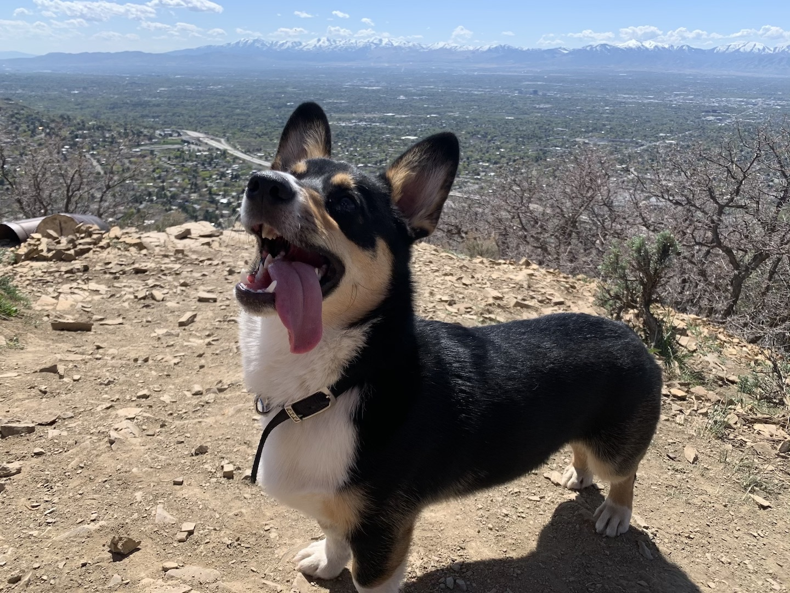

- Daniel Graves
- Home
- Experience
- Hobbies
Hiker And Tennis Lover
Even as a Utahn, I had never understood why so many people loved hiking... until now. Over the past couple of years I have had a much more opened mind about exploring the outdoors and the joys that it can bring. In the past, I would never have gone on a hike if you'd have invited me, but now it's absolutely one of my favorite hobbies. My pet corgi, Robbie, loves it too!
Tennis is another hobby that I have really grown to enjoy over the last 5 years or so. I played when I was a kid but ended up forgetting about it for a while in high school and college. When I met the woman who eventually became my wife, she got me back into the sport and now we play multiple times every week!